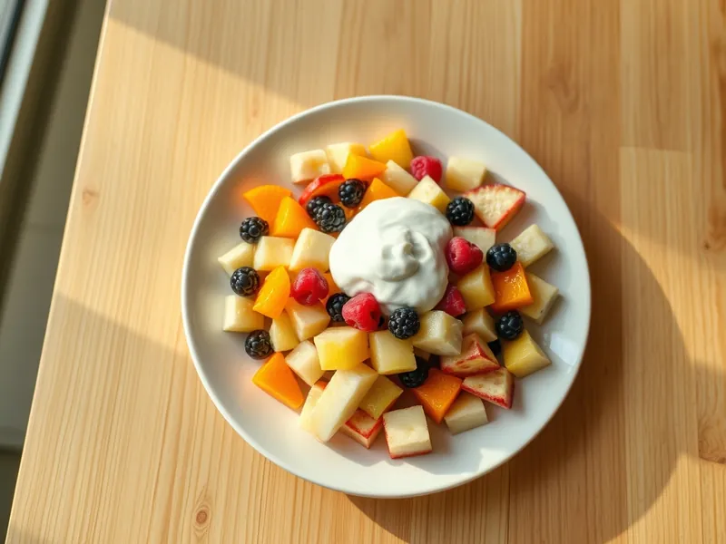

Фруктовый салат с йогуртом
Яблоко, груша, банан, апельсин и ягоды, заправленные натуральным йогуртом
15 мин4 порц.155 ккал на порциюБ 4 · Ж 2 · У 28Интернациональная кухня
Открыть в приложении: порции, таймеры, список покупок
Продукты на 4 порц.
- Яблоки1 шт
- Груша1 шт
- Бананы2 шт
- Апельсин1 шт
- Ягоды (свежие или замороженные) по желаниюпо вкусу
- Йогурт без добавок200 г
- Лимон2 ч. л.
- Мёд по желанию2 ч. л.
Как готовить
- Апельсин очистите от кожуры и белых плёнок, разделите на дольки и нарежьте кусочками.
- Яблоко и грушу очистите от сердцевины и нарежьте кубиком 1,5 см, сбрызните лимонным соком.
- Бананы нарежьте кружками.
- Соедините фрукты и ягоды в миске, заправьте йогуртом, по желанию смешанным с мёдом, и аккуратно перемешайте.
- Подавайте сразу, пока фрукты не дали сок.
Совет. Банан режьте последним и сбрызните лимоном вместе с яблоком, тогда он не потемнеет. Для маленьких детей мёд не добавляйте.